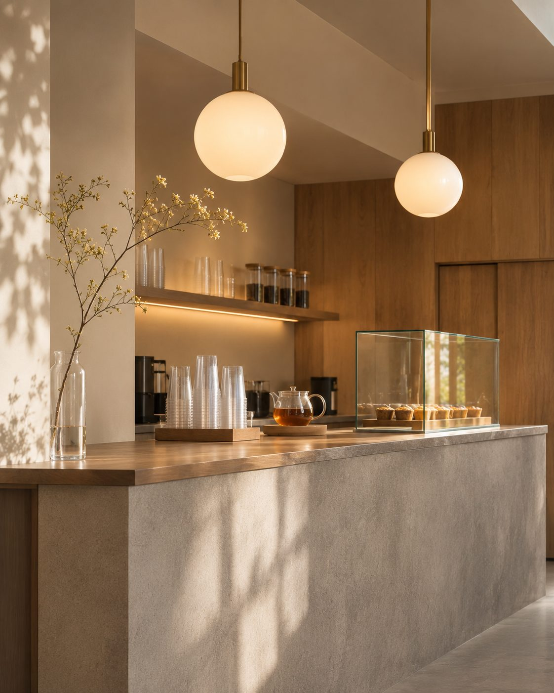
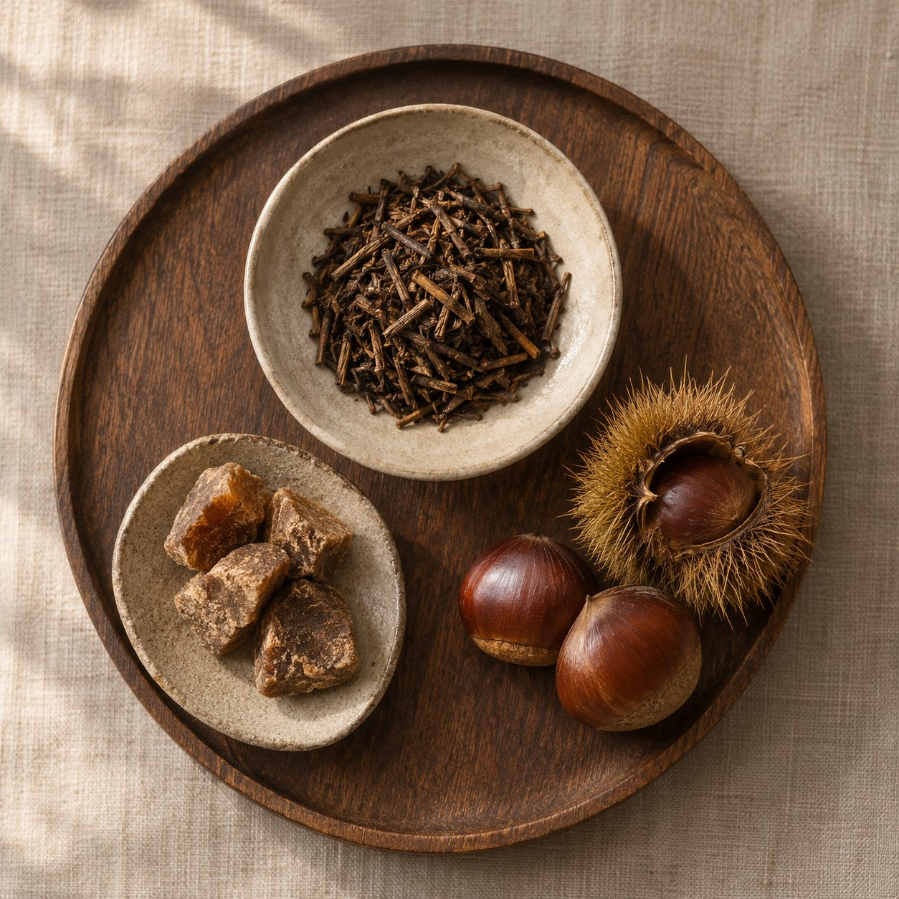

OUR SHOP
店舗情報
横浜・元町の
テイクアウト専門ティースタンド
SHIZUKU tea & tapioca
横浜・元町のテイクアウト専門ティースタンド。
季節の素材を取り入れた、ここでしか出会えないドリンクを
一年に四度お届けしています。
街歩きの合間に、季節のひとときをお楽しみください。

GALLERY
ギャラリー



INFORMATION
営業情報
- 店舗名
- SHIZUKU tea & tapioca
- 住所
- 〒231-0861 神奈川県横浜市中区元町1丁目
- 営業時間
- 11:00 〜 20:00
- 定休日
- 不定休（Instagramでお知らせします）
- 形態
- テイクアウト専門・店頭にベンチ2席
- 支払い方法
- 現金、クレジットカード、交通系IC、PayPay
- 駐車場
- なし
BUSY TIME
混雑の目安
混雑
(高)(低)
※あくまで目安です。天候やイベントにより変動する場合があります。
※架空店舗のため、表示している混雑度はサンプル値です。
FAQ
よくある質問